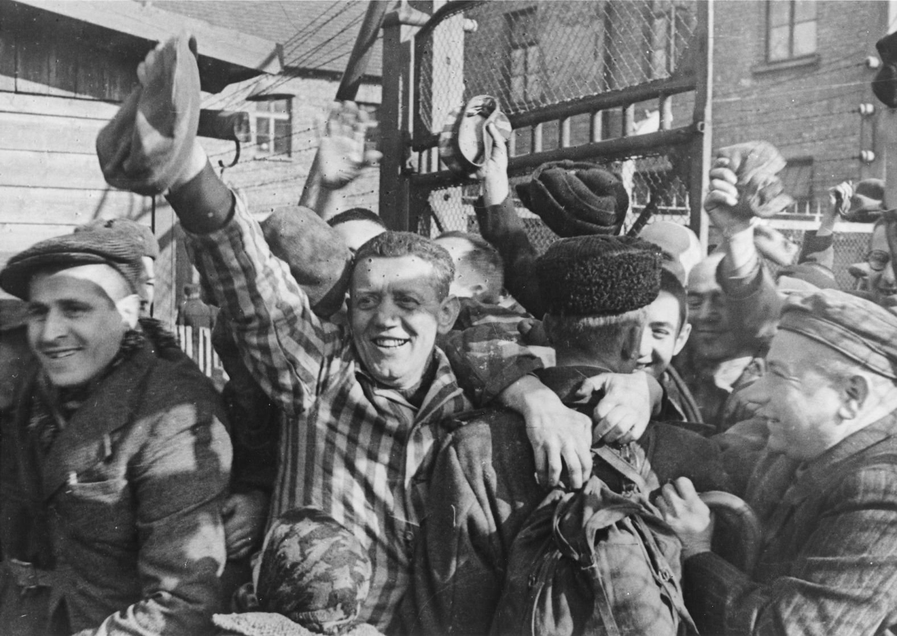
Holocaust

The Holocaust was the state-sponsored persecution and genocide of approximately six million European Jews, occurring between 1933 and 1945. It was perpetrated by the Nazi regime, led by Adolf Hitler. The Nazis and their collaborators murdered Jewish people of all backgrounds and ages, fueled by deep-seated antisemitic ideologies that falsely portrayed the Jewish community as a threat to German society. After World War I, some in Germany struggled to accept their nation's defeat. Seeking a scapegoat, they targeted the Jewish population, building upon centuries of existing European prejudice. Propaganda claimed that Jewish citizens had betrayed the army, a falsehood designed to channel political anger toward an innocent minority.
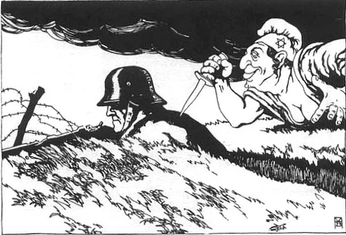
"The Stab in the Back" myth: A piece of Nazi propaganda.
Marking The Jews
In antisemitic propaganda, such as caricatures, Jewish people were depicted using monstrous imagery. Artists used exaggerated facial expressions and heavy shadows to create an appearance that was intentionally frightening and nightmarish. (Historically, the term "Semitic" refers to a large family of languages originating in the Middle East, including Hebrew and Arabic; however, the Nazis used the term "antisemitism" to give their racial hatred a false scientific justification.)


On the left: a poster for the propaganda film "The Eternal Jew."
On the right: imagery associated with the Nazi party, depicting the persecution of Jewish people as a "victory" for their cause.
As the war escalated, Jewish people in Nazi-occupied territories were forced to wear a yellow, Star of David-shaped badge on their clothing. These badges, which often featured the word "Jude," were used to segregate and humiliate the population. Across most of occupied Europe, these badges were mandatory for all Jewish citizens, marking them for further persecution.

Jewish women wearing the "Yellow Badge" in Austria.
Beginning in 1939, Jewish people were forcibly removed from their homes and relocated to Ghettos—restricted urban areas designed to isolate them. These areas were severely overcrowded and lacked basic infrastructure. Starvation and disease were rampant due to the intentional withholding of food and medicine. While some countries, such as Denmark, managed to save the vast majority of their Jewish citizens through heroic rescue efforts, most Ghetto residents faced a grim fate. In the Warsaw Ghetto, for example, 22% of the 380,000 imprisoned people died within a single year before deportations to death camps even began.
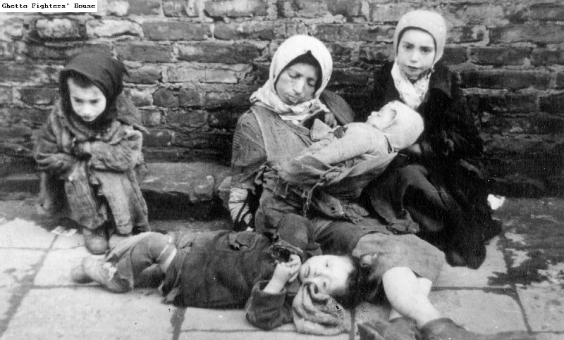
A Jewish mother and her children facing starvation on the streets of the Warsaw Ghetto.
Disclaimer: Many photographs of the Ghettos were taken by Nazi photographers for propaganda purposes. These images were often staged to either humiliate the victims or falsely portray them as content in order to hide the reality of Nazi crimes. The true conditions in the Ghettos were horrific and life-threatening.
The Death Camps: "The Final Solution"
The "Final Solution" was the Nazi code name for the systematic, industrialized mass murder of the Jewish people. Victims were deported from Ghettos to specialized death camps designed for high-efficiency killing.
Many victims were initially unaware of their fate, having been told they were being "resettled" for work. They arrived on overcrowded freight trains, often referred to as "Transports to Extinction." Upon arrival, they were stripped of all personal belongings—suitcases, shoes, and even toothbrushes were confiscated—as they realized the terrifying reality of their situation.
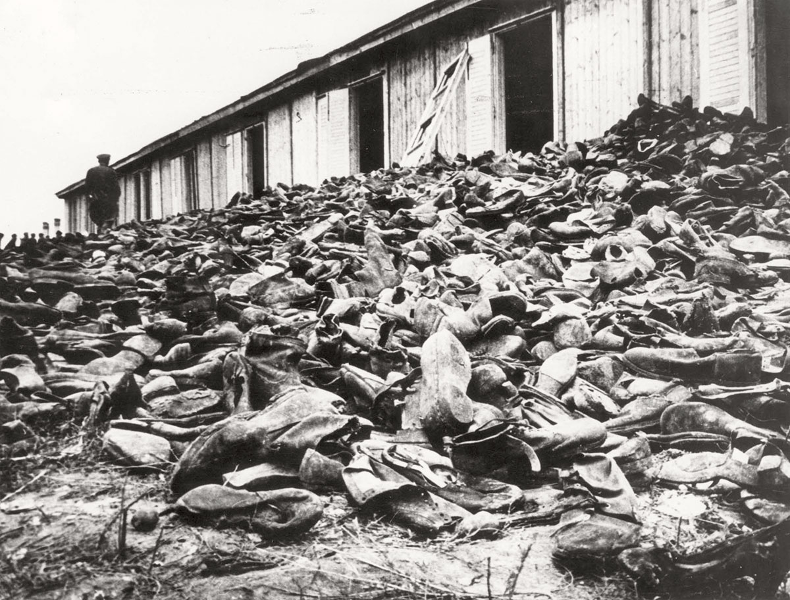
The Majdanek Death Camp in Poland: A pile of shoes taken from victims before they were murdered.
There were six primary death camps, all located in occupied Poland: Chełmno, Bełżec, Sobibór, Treblinka, Majdanek, and Auschwitz-Birkenau. Chełmno began operations on December 8, 1941, utilizing mobile "Gas Vans" where victims were suffocated by carbon monoxide exhaust. In Bełżec, Sobibór, Treblinka, and Majdanek, the Nazis built stationary gas chambers where carbon monoxide was piped into sealed rooms to murder large groups of people simultaneously.
Auschwitz
Auschwitz was the largest camp complex, consisting of three main areas:
Auschwitz I: The administrative center and original concentration camp.
Auschwitz II (Birkenau): The primary site of industrialized mass murder.
Auschwitz III (Monowitz): A forced-labor camp where prisoners were worked to death for the industrial production of chemicals.
Beyond these, there were dozens of sub-camps where prisoners endured brutal labor.
In the gas chambers of Birkenau, the Nazis used Zyklon B—a highly lethal, cyanide-based pesticide. This method allowed for mass murder on an unprecedented scale. Auschwitz was also the only camp where prisoners were systematically tattooed with identification numbers on their arms as a way to strip them of their humanity.
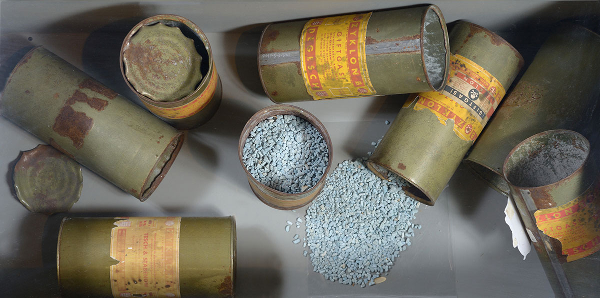
Canisters that contained Zyklon B.

The following are photographs of Jewish children imprisoned in Auschwitz. They include Mamet Merenstein (prisoner 62473), Michalina Petrenko (prisoner 27018), Miroslav Kubik (who survived, prisoner 67065), Czesława Kwoka (1928–1943, prisoner 26947), and Krystyna Trzesniewska (1929–1943, prisoner 27129).
These photos were taken by Wilhelm Brasse, a Polish prisoner forced to work as a camp photographer between 1941 and 1943. Brasse was ordered to document the victims, including those selected for the experiments of Dr. Josef Mengele. After the war, the photographer was so haunted by the images of the children he photographed that he could never return to his profession as a photographer.
"Those Jewish boys and those naked
Jewish girls kept passing before my eyes."
Brasse has retired from photography since.
At the Auschwitz selection ramp, Dr. Josef Mengele—known as the "Angel of Death"—would decide the fate of arriving Jews. With a simple gesture, he sent most to immediate death in the gas chambers and others to forced labor. Mengele also selected specific individuals for cruel pseudo-medical experiments, violating every ethical principle of medicine.
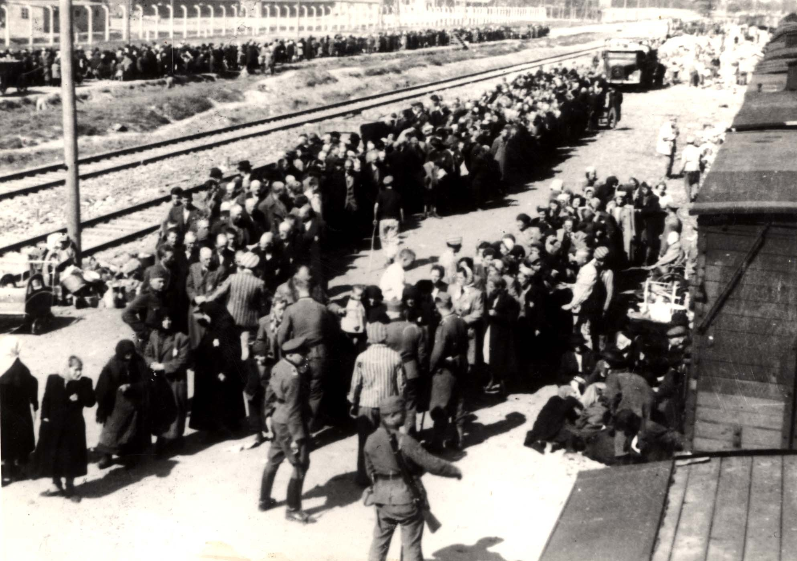
The selection ramp at Auschwitz-Birkenau.
Israeli singer Noa Kirel visits Auschwitz, where members of her family were murdered. The video discusses the cold bureaucracy of the selection process.
Mengele focused his "research" on twins and people with physical abnormalities, including both adults and children.
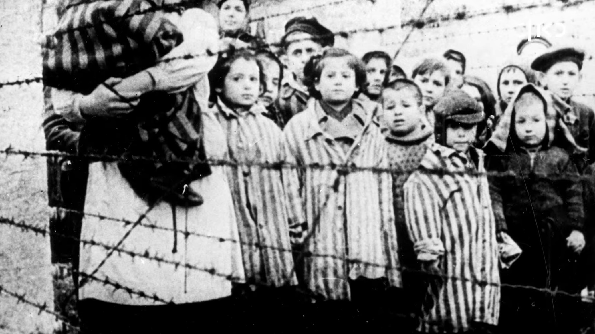
In the center: Moti and Yoel Alon, survivors of Mengele's twin experiments.
Mengele’s experiments were based on the false Nazi ideology of racial purity. He performed horrific surgeries and fatal tests on twins in specially designated barracks. Witnesses, such as prisoner-doctor Gisella Perl, recalled his terrifying lack of empathy as he performed these atrocities. His goals were as scientifically baseless as they were cruel: to find "defects" in those he deemed inferior and to discover a way to increase the birth rate of the "Aryan" population.
Josef Mengele.
The Nazi doctor aimed for two primary goals in his research:
1. To study twins and individuals with physical differences, whom he viewed as genetic "errors."
2. To unlock the secrets of multiple births to accelerate the expansion of the Third Reich.
The Twin Experiments
Mengele was obsessed with twins. In one common experiment, he would infect one twin with a disease like typhus and then transfuse their blood into the healthy twin to observe the results. Many died during these procedures; those who survived were often murdered afterward so their bodies could be dissected. He also performed unnecessary amputations and other surgical tortures. Miklós Nyiszli, a prisoner-doctor at Auschwitz, testified that Mengele once murdered 14 twins in a single night through lethal injections.
Chloroform, once used as an anesthetic, was often used as a tool for murder in these experiments.
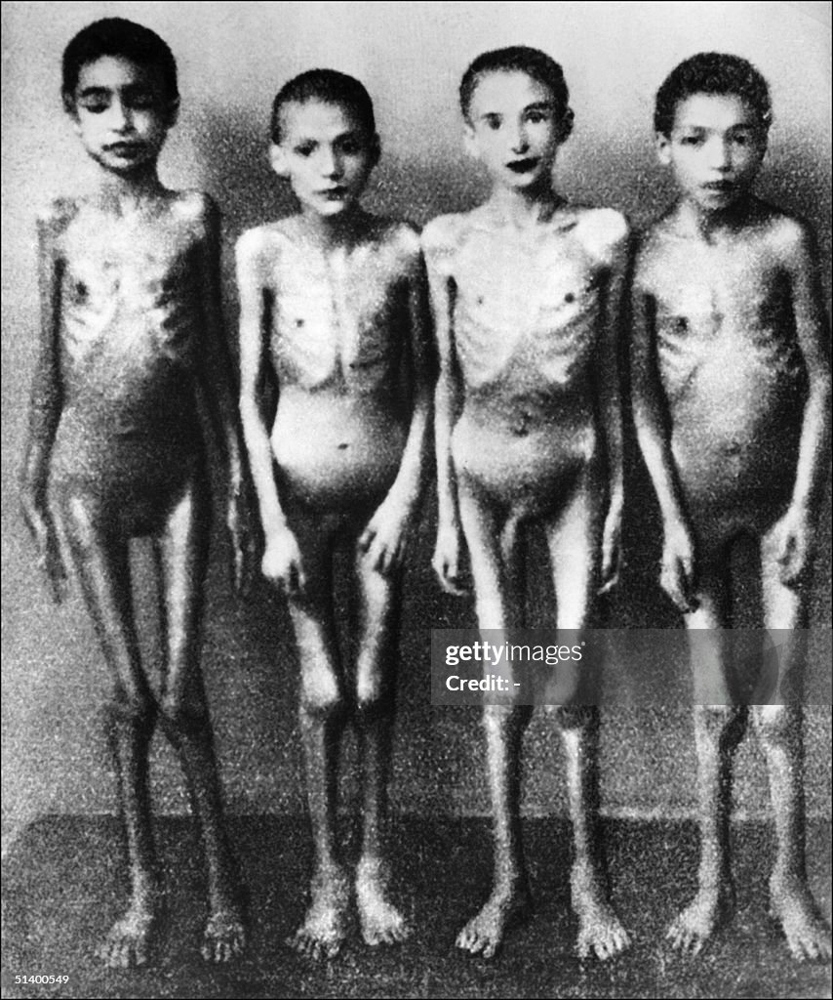
Auschwitz-Birkenau: Child prisoners photographed as part of a camp investigation.
“I delivered a beautiful blonde girl, but Mengele ordered that my breasts be bound so that he could see how long a newborn could survive without food.”
— Ruth Elias, survivor of Auschwitz-Birkenau.
After watching her child suffer for days, a Czech prisoner-doctor provided Elias with a syringe of morphine to end the infant's agony and spare it from further torture.
27.1.1945
On January 27, 1945, the Soviet Red Army liberated Auschwitz.
As the Soviet forces approached, the Nazis attempted to destroy the evidence of their crimes. Under the orders of Heinrich Himmler, the gas chambers and crematoria at Birkenau were bombed. However, the sheer scale of the camp meant the Nazis could not destroy everything before the liberators arrived.
The Liberating Soldiers documented the horrors they found:
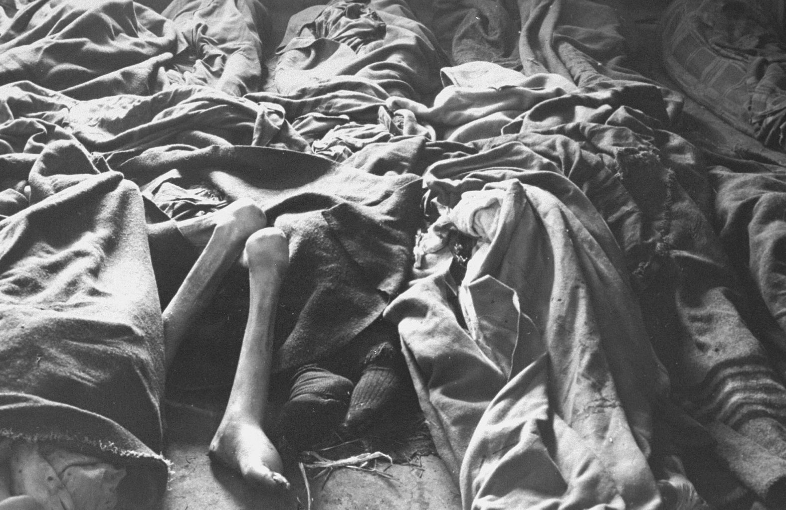
Piles of victims discovered by liberating forces in February 1945.
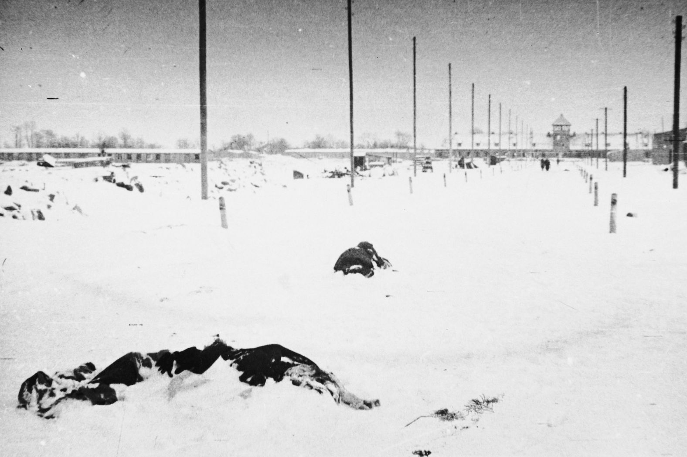
Prisoners who succumbed to exhaustion and cold shortly before liberation.
Massive quantities of hair shorn from victims. This hair was intended for industrial use, such as textiles and rope-making.
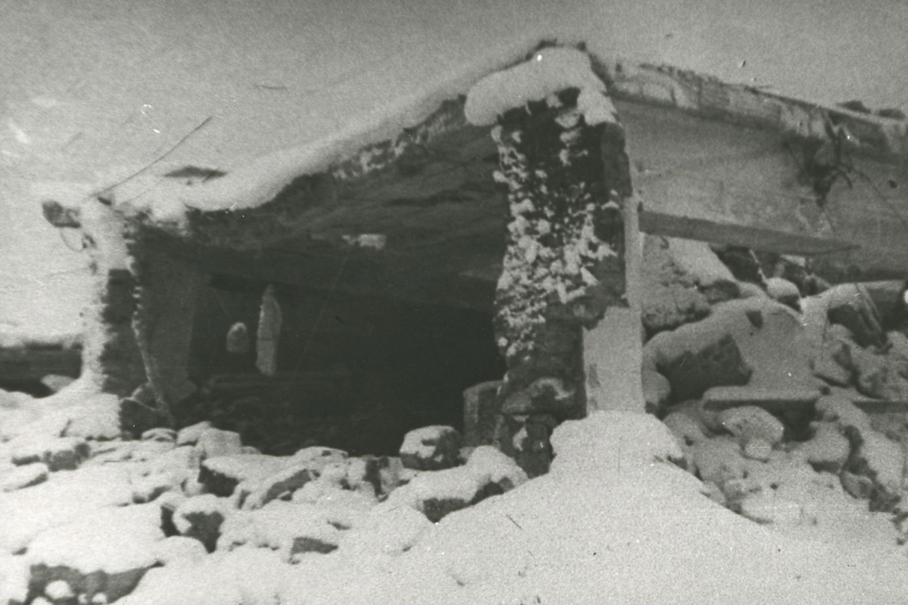
The ruins of the Birkenau gas chambers, destroyed by the Nazis to hide their crimes.
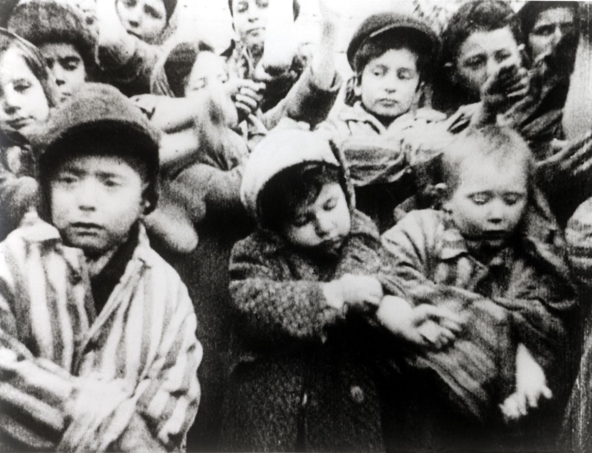
Child survivors of Auschwitz displaying the identification numbers tattooed on their arms.
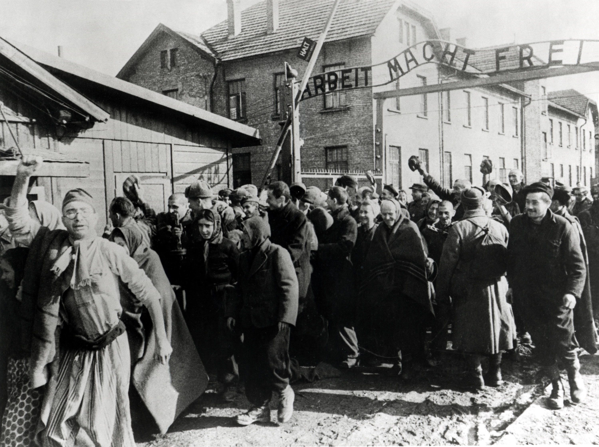
Survivors leaving the camp in February 1945.
Behind them is the gate featuring the deceptive Nazi slogan "Arbeit macht frei" (Work sets you free).